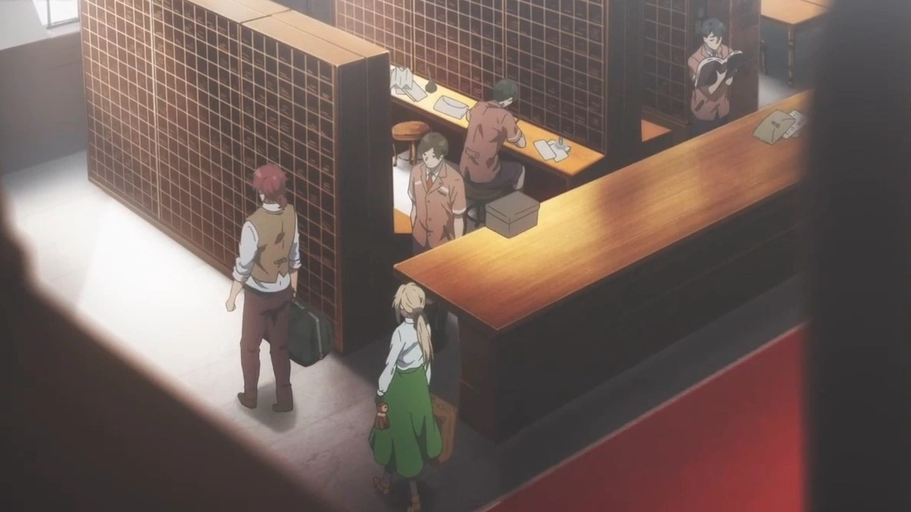
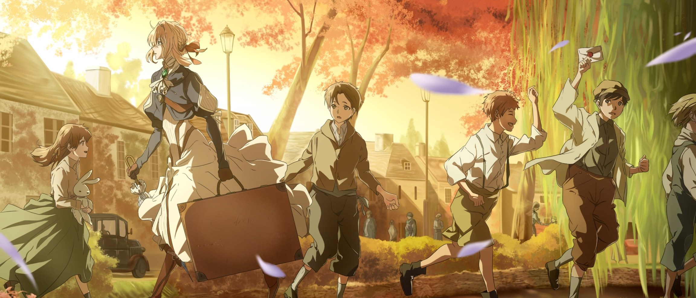
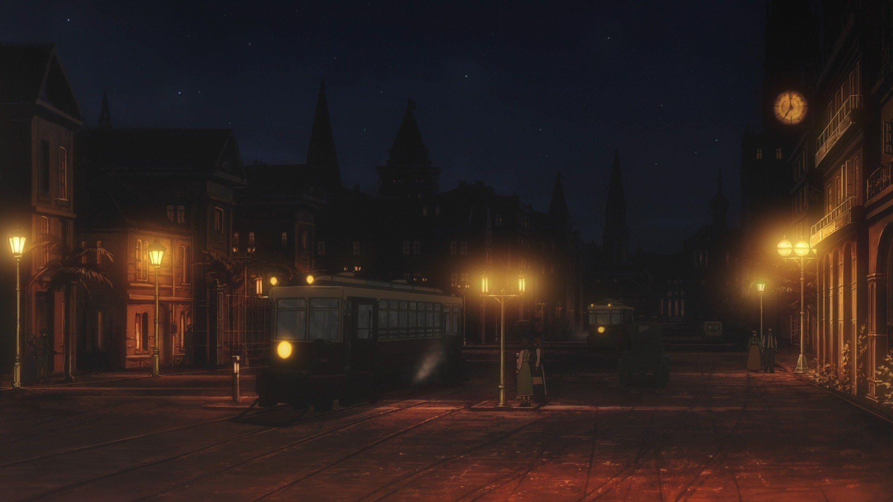
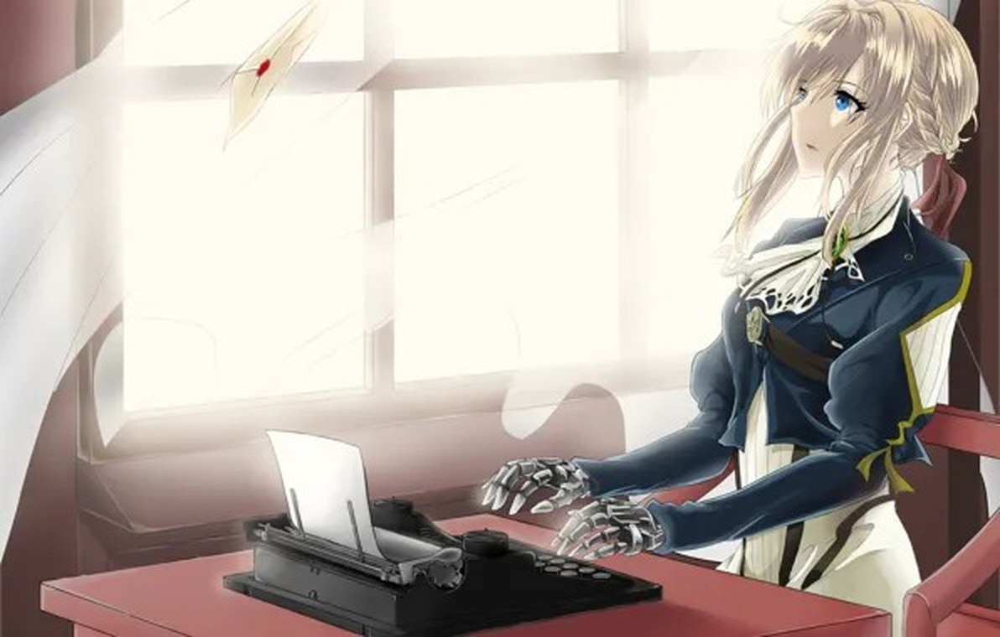
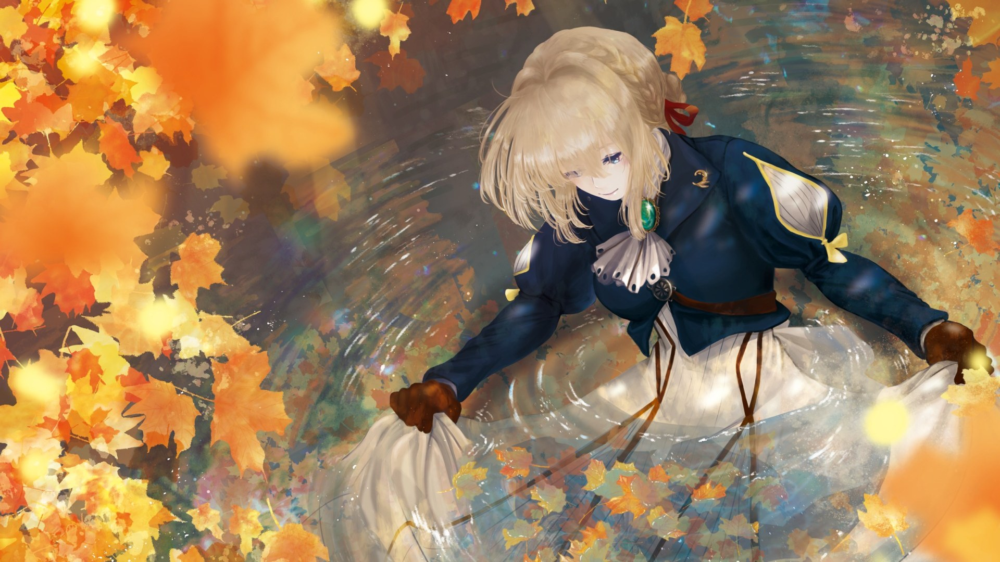

OP · 片头曲
Sincerely
演唱：TRUE（唐泽美帆 作词 / PENGUIN RESEARCH・堀江晶太 作曲 / 堀江晶太・Evan Call 编曲）
钢琴与大提琴交织的开场曲，几乎在第一秒就确立了整部作品「清澈而克制」的底色。
一部公认「霸权」的作品背后，是一整套严密的分工： 从晓佳奈笔下的文字，到高濑亚贵子的角色设计， 再到 Evan Call 的琴键与每一句黑底白字的标题。
| 职务 | 名单 |
|---|---|
| 原作 | 晓佳奈（KA Esuma 文库 / 京都动画） |
| 监督 | 石立太一（石黑昇） |
| 系列构成 | 吉田玲子 |
| 角色设计 / 总作画监督 | 高濑亚贵子 |
| 系列演出 | 藤田春香 |
| 世界观设定 | 铃木贵昭 |
| 美术监督 | 渡边美希子 |
| 色彩设计 | 米田侑加 |
| 摄影监督 | 船本孝平 |
| 3D 导演 | 山本伦 |
| 小道具设定 | 高桥博行、太田稔 |
| 编集 | 重村建吾 |
| 音响监督 | 鹤冈阳太 |
| 音响制作 | 乐音舎 |
| 音乐 | Evan Call |
| 音乐制作 | Lantis、Miracle Bus |
| 动画制作 | 京都动画（Kyoto Animation） |
| 制作协力 | Animation Do |
| 制作 | 紫罗兰永恒花园制作委员会 |

原著小说由晓佳奈撰写、高濑亚贵子绘制插画， 在 KA Esuma 文库出版，并获得第 5 届京都动画赏小说部门大赏—— 该奖项举办至今唯一获此大赏的作品。
2016 年 5 月，京都动画公布动画化消息； 2018 年 1 月 10 日，TV 动画开播； 2020 年 9 月 11 日，剧场版上映并由 Netflix 全球发行。
演唱：TRUE（唐泽美帆 作词 / PENGUIN RESEARCH・堀江晶太 作曲 / 堀江晶太・Evan Call 编曲）
钢琴与大提琴交织的开场曲，几乎在第一秒就确立了整部作品「清澈而克制」的底色。
演唱：茅原实里（作词・歌 / 菊田大介 作曲・编曲）
「在温柔编织出的摇篮里，向着明天前进吧。」 这首片尾曲被许多观众视为全剧情绪的最终升华。
原唱：结城爱良（英语版）
官方曾邀请五位歌手以英语、韩语、法语与华语分别翻唱， 每一版都成为独立的名曲——一部动画为角色写出属于自己的歌， 这本身就是「京紫」式浪漫的一部分。
本作的音乐由 Evan Call 操刀。他以钢琴为核心、把弦乐与铜管的克制感压到最低， 让配乐退到情节之后，只在情绪需要时轻轻推一把—— 正如作品本身对「写信」的态度：不喧哗，但一定要送到。





取自作品本体的三组色彩：藏青（军服与夜色）、 黄铜金（义肢与齿轮）、 象牙白（信纸与蕾丝）， 以紫罗兰作为过渡与点缀，营造「清澈而怀旧」的二次元观感。
标题统一使用衬线字体并加大字距，模仿作品片头的手写英文字幕； 分隔线以「细金线 + 菱形花饰」构成； 引用段落采用信纸底纹与左侧色条，还原「代笔信函」的质感。
导航条吸顶并随滚动高亮当前页； 卡片悬停时轻微上浮、图片缓慢推近； 画集支持点击放大与 Esc 关闭； 各区块在进入视口时渐次浮现。
本站共 6 个网页，主文件夹为 MyWeb， 主文件夹内含 index.html（主页）、image（图片文件夹） 与 web（子页面文件夹）三个部分。 主页包含通往全部子页的链接，每个子页均设有「⟵ 返回主页」按钮， 页面之间全部使用相对路径相互引用，确保本地打开与服务器部署时表现一致。